Telecomunicação: Superar a distância (tele, do grego).
Dados: Informações apresentadas em qualquer formato acordado entre as partes criadoras e usuárias.
Definição Técnica
A comunicação de dados consiste na troca de informações entre dois dispositivos através de um meio de transmissão via um sistema composto pela união de hardware (equipamentos físicos) e software (programas).
Eficácia da Comunicação
A eficácia e utilidade de um sistema de comunicação dependem de quatro características fundamentais:
Entrega: O sistema deve entregar os dados ao destino correto e exclusivamente ao dispositivo ou usuário pretendido.
Precisão: Os dados devem chegar intactos; informações alteradas e não corrigidas são inúteis.
Sincronização: A entrega deve ocorrer no momento certo (em tempo real para áudio e vídeo).
Jitter: Refere-se à variação no tempo de chegada dos pacotes, resultando em qualidade irregular.
Componentes do Sistema
Componente
Função
Exemplos
1. Mensagem
A informação a ser transmitida.
Texto, números, imagens, áudio e vídeo.
2. Emissor
O dispositivo que envia os dados.
Computador, câmera, telefone.
3. Receptor
O dispositivo que recebe os dados.
Monitor, servidor, rádio.
4. Meio
O caminho físico por onde a mensagem viaja.
Par trançado, fibra óptica, ondas de rádio.
5. Protocolo
Conjunto de regras que governa a comunicação.
Acordos de software (língua comum).
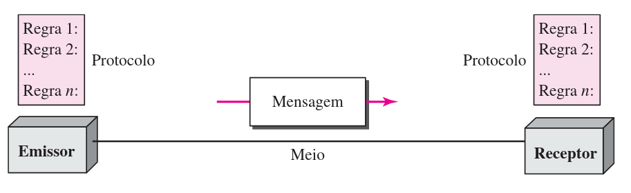
Representação dos Dados
Texto: Representado por padrões de bits; o sistema Unicode (32 bits) é o padrão predominante atual.
Números: Convertidos diretamente para binário para facilitar cálculos matemáticos.
Imagens: Formadas por matrizes de pixels, utilizando métodos como RGB (Red, Green, Blue).
Áudio e Vídeo: Possuem natureza contínua e requerem digitalização para transmissão.
Modos de Transmissão (Fluxo)
A interação entre dois dispositivos é classificada pela direção e simultaneidade do fluxo de dados:
Analogias de Fluxo
Simplex (Unidirecional): Como uma rua de mão única. Apenas um transmite (Ex: Teclado para CPU).
Half-Duplex (Bidirecional Alternado): Como uma estrada com obras; um de cada vez (Ex: Walkie-talkies).
Full-Duplex (Bidirecional Simultâneo): Como uma rodovia de pista dupla. Fluxo nos dois sentidos simultaneamente (Ex: Rede telefônica).
Fluxo vs. Endereçamento
É crucial distinguir a mecânica da estrada (fluxo) de para quantos você está dirigindo (endereçamento).
Conceito
Pergunta Principal
Exemplos
Fluxo (Simplex, Half, Full)
"Quem fala e quando?"
Half-Duplex: Eu falo, depois você fala.
Endereçamento (Unicast, Multi, Broad)
"Para quantos eu falo?"
Unicast: Falo para uma pessoa específica.
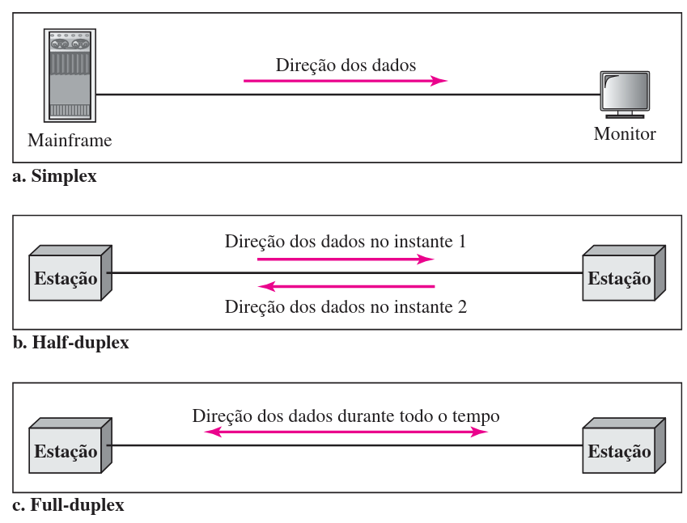
Redes e Efetividade
Uma rede é um conjunto de dispositivos (nós) conectados por links de comunicação.
Processamento Distribuído: Estratégia onde tarefas são divididas entre vários computadores independentes.
Critérios de Efetividade:
Desempenho: Medido pelo tempo de trânsito e tempo de resposta; influenciado pelo hardware e software.
Confiabilidade: Medida pela frequência de falhas e tempo de recuperação do link.
Segurança: Proteção contra acesso não autorizado e danos aos dados.
Atributos Físicos da Rede
Existem dois tipos fundamentais de conexão física entre dispositivos:
Ponto a Ponto: Um link dedicado conecta exclusivamente dois dispositivos (Ex: controle remoto da TV).
Multiponto: Vários dispositivos compartilham o mesmo link espacialmente ou temporalmente.
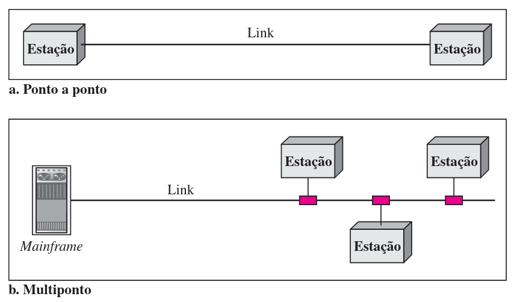
Topologia em Malha (Mesh)
Cada dispositivo possui um link ponto a ponto dedicado com cada um dos demais dispositivos.
Vantagens: Robustez extrema (redundância) e privacidade.
Desvantagens: Volume massivo de cabeamento e alto custo de instalação.
Cálculo de Malha para $n$ dispositivos
Número de Portas (I/O) por dispositivo: $n - 1$
Número Total de Links Físicos:
$$Links = \frac{n(n - 1)}{2}$$
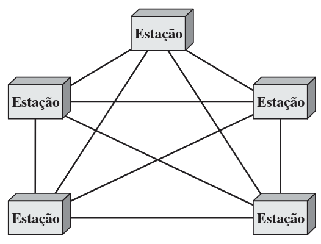
Topologias Estrela
Cada dispositivo tem um link dedicado apenas com um controlador central (Hub/Switch).
Vantagem: Mais barata e fácil de instalar; a falha de um link afeta apenas um dispositivo.
Risco: Possui um ponto único de falha (o hub central).
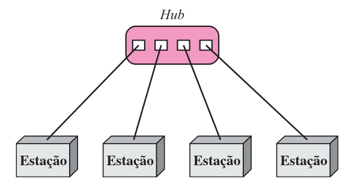
Topologias Barramento (Bus)
Topologia multiponto onde um único cabo longo (backbone) interliga todos os dispositivos.
Desafio: O sinal degrada com a distância; uma ruptura no cabo principal derruba toda a rede.
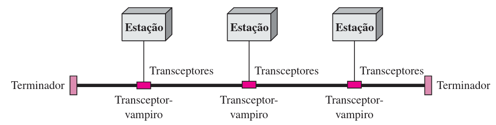
Topologias Anel
Cada dispositivo conecta-se ponto a ponto exclusivamente com seus dois vizinhos imediatos.
Operação: O sinal percorre o anel em sentido único, sendo regenerado por cada repetidor.
Risco: Uma falha em qualquer estação ou link pode derrubar a rede.
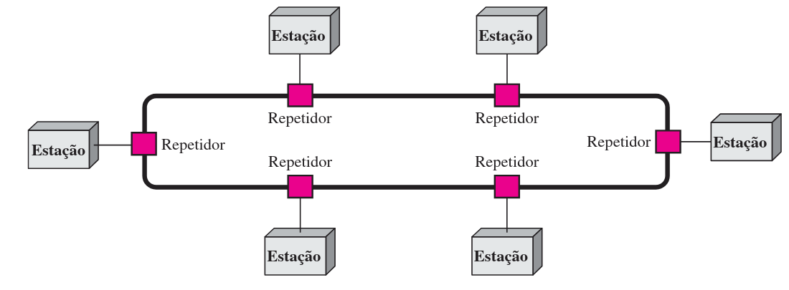
Topologias Híbrida
Combina características das topologias anteriores para maximizar eficiência e escalabilidade.
Exemplo: Backbone em estrela conectando sub-redes em barramento.
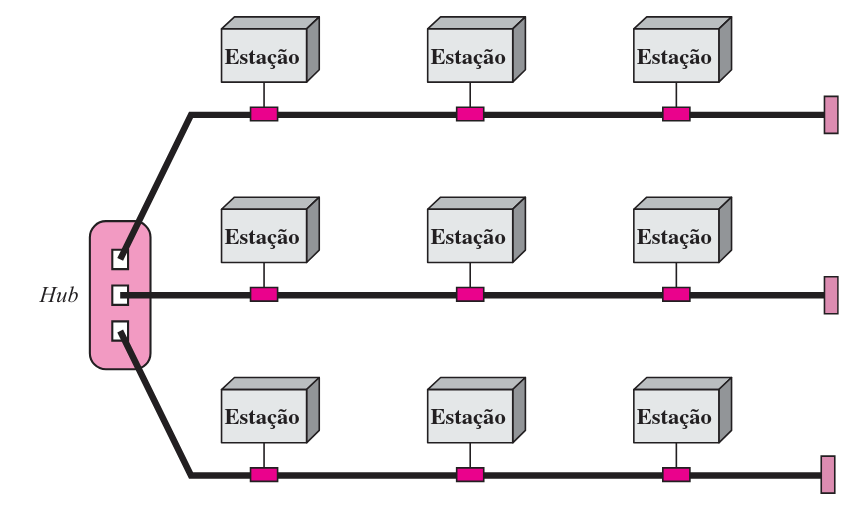
Questões de Fixação - 1 / 3
1. Considere um sistema de Rádio FM tradicional e um sistema de Walkie-Talkie.
a) Classifique ambos quanto à direção do fluxo (Simplex, Half-Duplex ou Full-Duplex).
b) Classifique a torre de Rádio FM quanto ao endereçamento (Unicast, Multicast ou Broadcast).
c) Explique por que uma conversa telefônica é considerada Full-Duplex e Unicast ao mesmo tempo.
2. Para uma rede de um pequeno escritório com 6 computadores, calcule:
a) Quantos cabos físicos (links) são necessários para uma topologia em Malha completa? (Use $n(n-1)/2$).
b) Quantos cabos são necessários para uma topologia em Estrela (com 1 hub)?
c) Qual a diferença absoluta no número de cabos entre as duas opções?
Questões de Fixação - 1 / 3 (cont.)
3. Uma empresa conecta 10 computadores em uma topologia em Malha (Mesh) completa.
a) Quantas portas de I/O cada computador individual precisará ter instaladas?
b) Quantos links físicos (cabos) existirão no total nessa rede?
c) Se a empresa adicionar mais um computador (total 11), quantos novos cabos precisarão ser instalados?
4. Analise uma rede em topologia de Barramento (Bus) com 15 estações de trabalho.
a) Quantos terminadores são necessários fisicamente para evitar reflexão de sinal?
b) Se o cabo romper entre a 7ª e a 8ª estação, quantas estações continuam aptas a se comunicar com todas as outras? Justifique.
Questões de Fixação - 1 / 3 (cont.)
5. Considere uma rede em Anel unidirecional com 20 estações.
a) Quantas conexões físicas (links) existem no total para fechar o anel?
b) O que acontece com a rede se a estação número 5 sofrer uma falha de energia e desligar?
c) Como a topologia em Estrela isola esse tipo de falha melhor que o Anel simples?
13. Explique por que uma variação alta de Jitter é catastrófica para uma transmissão de TV via internet (IPTV), mas quase imperceptível para o download de um arquivo PDF.
14. Na Camada de Rede, qual é a diferença técnica entre endereçar um pacote e rotear um pacote? Use a analogia do sistema de correios.
Hierarquia de Protocolos
A metodologia padrão para lidar com a complexidade das redes é a organização em camadas (ou níveis).
Máquina Virtual: Cada camada oferece serviços específicos à camada superior e oculta os detalhes de implementação.
Protocolo: Conjunto de regras e convenções que governa a comunicação entre camadas pares (peers).
Interface: Define quais operações e serviços a camada inferior oferece à superior.
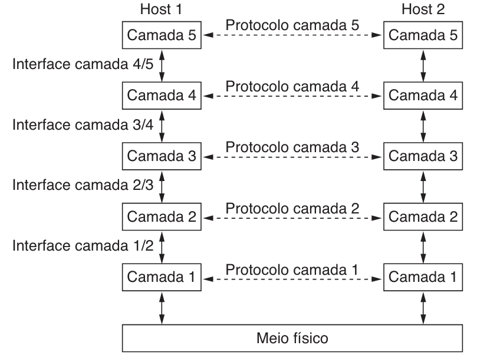
Analogia dos Filósofos
A comunicação real envolve o fluxo vertical de dados, enquanto a lógica é horizontal.
Camada 3 (Filósofos): Desejam comunicar uma ideia; falam idiomas diferentes.
Camada 2 (Tradutores): Convertem a mensagem para um idioma comum acordado (Protocolo).
Camada 1 (Secretárias): Transmitirão a mensagem fisicamente por um meio (Ex: Fax) (Serviço).
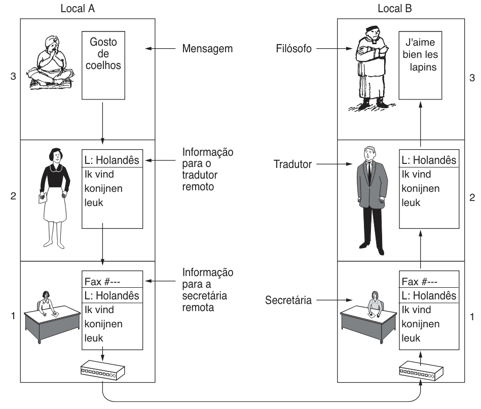
Processo de Encapsulamento
À medida que a mensagem desce pela pilha, cada camada adiciona informações de controle.
Cabeçalho (Header): Adicionado para controle (endereçamento, sequência).
Trailer: Adicionado em camadas inferiores (como Enlace) para detecção de erros.
Desencapsulamento: No destino, cada camada remove e processa o cabeçalho correspondente, entregando o conteúdo limpo à camada superior.
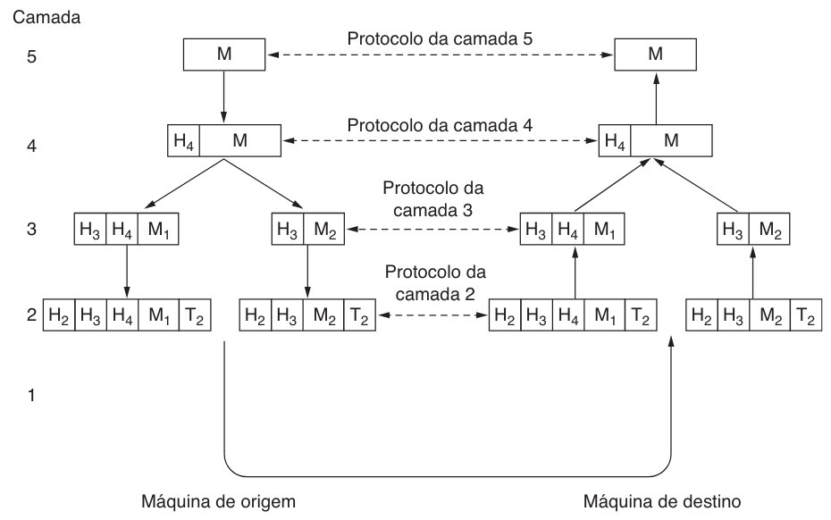
Desafios de Projeto de Camadas
Ao projetar redes, existem desafios universais que exigem soluções arquiteturais robustas:
Confiabilidade:
Detecção e Correção de Erros: Uso de redundância para recuperar mensagens corrompidas.
Roteamento: Capacidade de encontrar caminhos funcionais automaticamente caso enlaces falhem.
Evolução da Rede:
Endereçamento e Nomeação: Identificar bilhões de transmissores e receptores.
Escalabilidade: Manter o desempenho enquanto a rede cresce.
Alocação de Recursos:
Multiplexação Estatística: Compartilhamento dinâmico da largura de banda com base na demanda.
Controle de Fluxo vs. Congestionamento
Diferenciar a velocidade entre dois pontos da saúde global da rede:
Definições Cruciais
Controle de Fluxo: Mecanismo que impede um transmissor rápido de sobrecarregar um receptor lento (foco ponto a ponto).
Controle de Congestionamento: Estratégia global para evitar que a demanda excessiva de muitos hosts sobrecarregue a infraestrutura (foco na saúde da rede).
QoS (Qualidade de Serviço): Conjunto de mecanismos para garantir pontualidade (tempo real) vs. vazão (arquivos).
Segurança nas Camadas
A segurança permeia todas as camadas e baseia-se em criptografia para garantir três pilares:
Pilar de Segurança
Objetivo
Exemplo de Aplicação
Confidencialidade
Impedir a bisbilhotagem (snooping).
Garantir que apenas o destinatário leia a mensagem.
Autenticação
Verificar a identidade das partes.
Confirmar se um site bancário é legítimo.
Integridade
Impedir alterações clandestinas.
Evitar alteração de valores em transações financeiras.
Questões de Fixação - 2 / 3
6. Suponha que um arquivo de 1.000 bytes precise ser enviado em uma rede de 5 camadas. Cada camada adiciona um cabeçalho ($H$) de 20 bytes e a camada de enlace (Camada 2) adiciona também um trailer ($T$) de 20 bytes.
a) Qual será o tamanho total do quadro transmitido fisicamente pelo meio?
b) Qual é a porcentagem de overhead (informação de controle) nessa transmissão?
7. Na analogia dos Filósofos: Suponha que as Secretárias decidam parar de usar o Fax e comecem a usar E-mail.
a) Isso exige que os Tradutores mudem o idioma que usam (o protocolo)?
b) Isso exige que os Filósofos mudem a mensagem ("Gosto de coelhos")?
c) Use essa analogia para explicar o conceito de independência de camadas.
Questões de Fixação - 2 / 3 (cont.)
9. O Modelo OSI introduziu uma distinção clara entre Serviço e Protocolo. Utilizando a analogia de Programação Orientada a Objetos:
a) O que corresponde ao "Serviço"?
b) O que corresponde ao "Protocolo"?
c) Se um engenheiro alterar o algoritmo de criptografia interno de uma camada, ele alterou o serviço ou o protocolo?
12. Identifique qual pilar de segurança (Confidencialidade, Autenticação ou Integridade) foi violado:
a) Um atacante intercepta um pacote e altera o valor de $10 para $1.000.
b) Um usuário acessa um site falso que imita seu banco para roubar senhas.
c) Um espião industrial lê e-mails confidenciais sem alterá-los.
Serviços Orientados vs. Não Orientados
As camadas oferecem dois tipos fundamentais de serviços:
Arquitetura robusta fundamentada na ARPANET, projetada para sobreviver a perdas de hardware.
Camada de Enlace: Interface entre hosts e o meio físico.
Camada Internet: O coração do modelo; roteia pacotes independentes (IP, ICMP).
Camada de Transporte:
TCP: Orientado a conexão, confiável, ordenado.
UDP: Não orientado a conexão, não confiável, rápido.
Camada de Aplicação: Contém protocolos de alto nível (HTTP, DNS, SMTP, RTP).
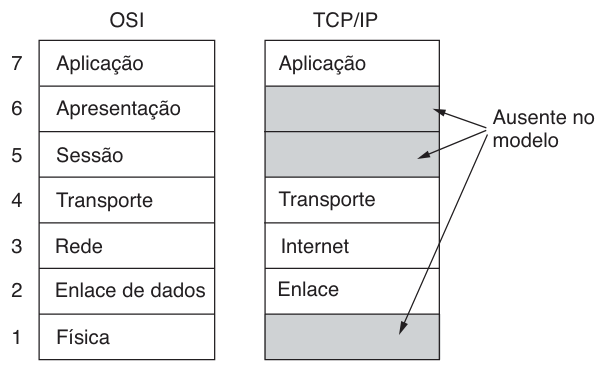
Comparação: OSI vs. TCP/IP
Característica
Modelo OSI
Modelo TCP/IP
Criação
Modelo criado antes dos protocolos.
Protocolos criados antes do modelo.
Conceitos
Separa claramente Serviço, Interface e Protocolo.
Mistura conceitos; protocolos menos encapsulados.
Rede
Suporta Orientado e Não Orientado a Conexão.
Suporta apenas Não Orientado (IP).
Transporte
Apenas Orientado a Conexão.
Suporta ambos (TCP/UDP).
Questões de Fixação - 3 / 3
8. Sobre serviços de rede:
a) Cite duas aplicações modernas onde o serviço UDP é preferível ao TCP. Justifique com base no atraso.
b) Por que o estabelecimento de conexão é necessário para garantir a entrega ordenada?
10. Compare a Camada de Transporte:
a) O modelo OSI permite protocolos não orientados a conexão nessa camada?
b) O modelo TCP/IP permite protocolos orientados a conexão?
c) Qual modelo provou-se mais flexível para aplicações modernas?
11. Em uma interação Cliente-Servidor confiável, seis pacotes são trocados. Se a conexão fosse por Datagrama, quantos pacotes seriam trocados minimamente? Por que bancos usam o modelo de seis pacotes?